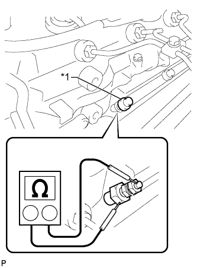

СВЕЧА НАКАЛИВАНИЯ (для моделей без DPF) > ПРОВЕРКА БЕЗ СНЯТИЯ С АВТОМОБИЛЯ |
| 1. ПРОВЕРЬТЕ СВЕЧУ НАКАЛИВАНИЯ |
Снимите разъем свечи накаливания № 1 (Нажмите здесь).
|  |
Измерьте сопротивление в соответствии со значениями, приведенными в таблице ниже.
| Контакты для подключения диагностического прибора | Состояние | Заданные условия |
| Контакт свечи накаливания - масса | 20°C (68°F) | Примерно 0,95 Ом |
| *1 | Изолирующая шайба винта |
Установите разъем свечи накаливания № 1 (Нажмите здесь).